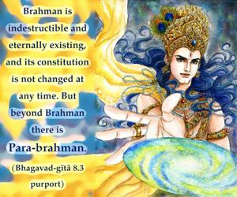
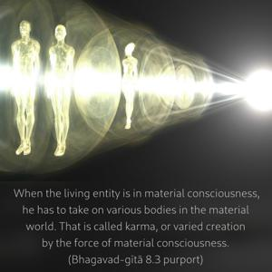
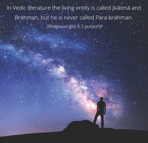
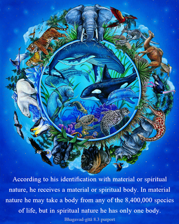
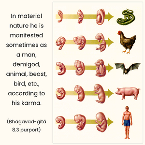
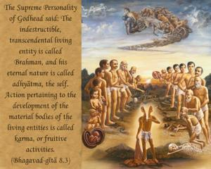

The Supreme Personality of Godhead said: The indestructible, transcendental living entity is called Brahman, and his eternal nature is called adhyātma, the self. Action pertaining to the development of the material bodies of the living entities is called karma, or fruitive activities.






Brahman is indestructible and eternally existing, and its constitution is not changed at any time. But beyond Brahman there is Para-brahman. Brahman refers to the living entity, and Para-brahman refers to the Supreme Personality of Godhead. The constitutional position of the living entity is different from the position he takes in the material world. In material consciousness his nature is to try to be the lord of matter, but in spiritual consciousness, Kṛṣṇa consciousness, his position is to serve the Supreme. When the living entity is in material consciousness, he has to take on various bodies in the material world. That is called karma, or varied creation by the force of material consciousness.
In Vedic literature the living entity is called jīvātmā and Brahman, but he is never called Para-brahman. The living entity (jīvātmā) takes different positions – sometimes he merges into the dark material nature and identifies himself with matter, and sometimes he identifies himself with the superior, spiritual nature. Therefore he is called the Supreme Lord’s marginal energy. According to his identification with material or spiritual nature, he receives a material or spiritual body. In material nature he may take a body from any of the 8,400,000 species of life, but in spiritual nature he has only one body. In material nature he is manifested sometimes as a man, demigod, animal, beast, bird, etc., according to his karma. To attain material heavenly planets and enjoy their facilities, he sometimes performs sacrifices (yajña), but when his merit is exhausted he returns to earth again in the form of a man. This process is called karma.
The Chāndogya Upaniṣad describes the Vedic sacrificial process. On the sacrificial altar, five kinds of offerings are made into five kinds of fire. The five kinds of fire are conceived of as the heavenly planets, clouds, the earth, man and woman, and the five kinds of sacrificial offerings are faith, the enjoyer on the moon, rain, grains and semen.
In the process of sacrifice, the living entity makes specific sacrifices to attain specific heavenly planets and consequently reaches them. When the merit of sacrifice is exhausted, the living entity descends to earth in the form of rain, then takes on the form of grains, and the grains are eaten by man and transformed into semen, which impregnates a woman, and thus the living entity once again attains the human form to perform sacrifice and so repeat the same cycle. In this way, the living entity perpetually comes and goes on the material path. The Kṛṣṇa conscious person, however, avoids such sacrifices. He takes directly to Kṛṣṇa consciousness and thereby prepares himself to return to Godhead.
Impersonalist commentators on the Bhagavad-gītā unreasonably assume that Brahman takes the form of jīva in the material world, and to substantiate this they refer to Chapter Fifteen, verse 7, of the Gītā. But in this verse the Lord also speaks of the living entity as “an eternal fragment of Myself.” The fragment of God, the living entity, may fall down into the material world, but the Supreme Lord (Acyuta) never falls down. Therefore this assumption that the Supreme Brahman assumes the form of jīva is not acceptable. It is important to remember that in Vedic literature Brahman (the living entity) is distinguished from Para-brahman (the Supreme Lord).